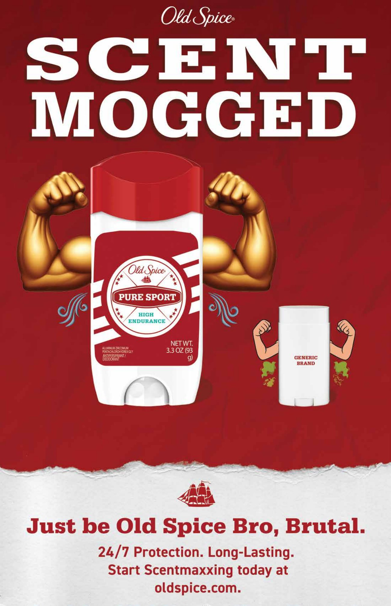

- Client: Old Spice
- Problem:
- Old Spice needed a way to capture a key target audience of young men ages 18–24 for their “Pure Sport” line of deodorant while still maintaining brand authenticity and noticeability.
- Solution:
- My design references a meme popular with the target audience, while maintaining the classic Old Spice brand voice of “ridiculously manly.”
- Role:
- Designer
